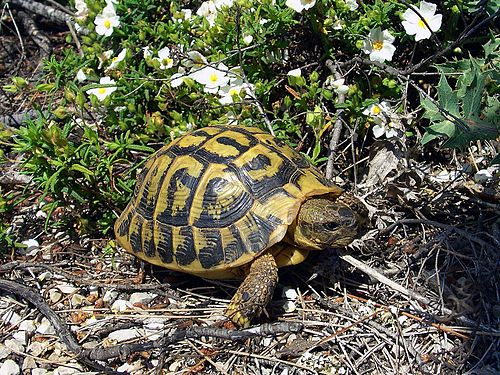
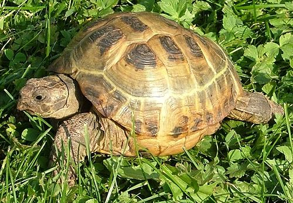
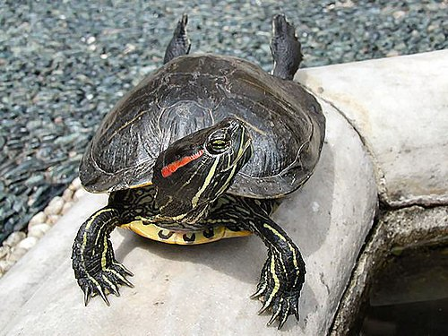
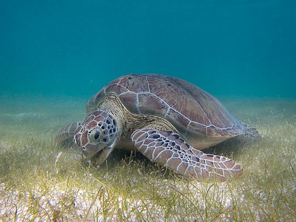

Czym jest żółw?
Rząd owodniowców z gromady zauropsydów (Sauropsida) lub według linneuszowskiej klasyfikacji rząd z gromady gadów (Reptilia). Rząd żółwi dzieli się na 2 podrzędy, 14 rodzin i obejmuje 356 gatunków oraz 122 podgatunki żyjące w czasach nowożytnych, tj. od 1500 roku n.e. W tym czasie wyginęło 7 gatunków oraz 3 podgatunki.
Charakteryzują się obecnością pancerza chroniącego cały tułów. Wśród żółwi spotyka się gatunki zarówno mięsożerne, jak i roślinożerne, wodne i lądowe. Wszystkie są jajorodne. Zapłodnienie wewnętrzne odbywa się za pomocą narządu kopulacyjnego. Żółwie, pomimo tego iż są mniej zróżnicowane morfologicznie od innych gadów, potrafiły opanować najróżnorodniejsze środowiska poczynając od mórz, a na terenach pustynnych kończąc.
Występują na wszystkich kontynentach z wyjątkiem Antarktydy, lecz zdecydowana większość to mieszkańcy ciepłej i umiarkowanej strefy wszystkich kontynentów oraz wysp oceanicznych i oceanów. Istnieje kilka gatunków żółwi, które zamieszkują Amerykę Północną, Europę i Australię, gdzie występuje klimat umiarkowany (mroźna zima lub bardzo gorące lato). Gatunki te potrafią przetrwać w takim klimacie, ponieważ zapadają w sen zimowy (hibernacja) lub sen letni (estywacja).
Rodzaje żółwi
| Nazwa gatunku | Nazwa naukowa | Środowisko życia | Charakterystyka |
|---|---|---|---|
| Żółw błotny | Emys orbicularis | Wodne / słodkowodne | Jedyny naturalnie występujący w Polsce gatunek żółwia. |
| Żółw grecki | Testudo graeca | Lądowe | Popularny w hodowlach, spokojny i odporny. |
| Żółw stepowy | Testudo horsfieldii | Lądowe (suche stepy) | Lubi suche i ciepłe środowisko, często trzymany w terrariach. |
| Żółw czerwonolicy | Trachemys scripta elegans | Wodne | Popularny w akwariach, łatwy w hodowli, ma czerwone paski przy głowie. |
| Żółw zielony | Chelonia mydas | Morskie | Duży gatunek żółwia morskiego, zagrożony wyginięciem. |
| Żółw pustynny | Gopherus agassizii | Lądowe (pustynne) | Potrafi długo przetrwać bez wody, zamieszkuje pustynie Ameryki. |
| Żółw lamparci | Stigmochelys pardalis | Lądowe (sawanny Afryki) | Charakterystyczny wzór na pancerzu przypominający cętki lamparta. |
| Żółw olbrzymi z Galapagos | Chelonoidis nigra | Lądowe (wyspy Galapagos) | Największy żółw świata, może żyć ponad 150 lat. |
| Żółw promienisty | Astrochelys radiata | Lądowe (Madagaskar) | Bardzo ozdobny pancerz z promienistym wzorem, gatunek zagrożony. |
| Żółw skórzasty | Dermochelys coriacea | Morskie | Największy żółw morski, ma miękki, skórzasty pancerz. |
Ranking przykładowy
-
Żółw błotny
Żółw barwy oliwkowobrązowej, jest średnio wypukły, pokrywają go gładkie, regularne rogowe tarcze. Na każdej większej tarczy rozchodzą się promieniście od jednego punktu żółte kreski. Plastron pokryty dużymi nieregularnymi jasnymi plamami jest dobrze wykształcony, u samców środkowa część nieco wklęsła. Głowa, szyja i odnóża pokryte licznymi małymi żółtymi plamkami. Zdarzają się okazy czarne i bezplamiste. Źrenice oczu są okrągłe. Samce mają z reguły tęczówkę rudopomarańczową lub brązową, a samice mają oczy upstrzone żółtymi plamkami z niekiedy całkiem żółtą tęczówką. Palce spina błona pławna. Szczególnie u samców długie i ostre pazury.

-
Żółw grecki
Karapaks mocno wypukły, plastron płaski o bokach wygiętych ku górze. Samce mają tylną część nieco wklęsłą. Głowa masywna częściowo pokryta regularnymi tarczkami. Szczęki tworzą dziób. Szyja długa pokryta miękką skórą. Przednie kończyny trochę spłaszczone, a tylne słupkowate. Nogi zakończone 5 prostymi pazurami. Zdarzają się osobniki ze zredukowanymi palcami tylnych kończyn do 3. Ogon krótki, gruby mocno zwężony na końcu zakończony twardym kolcem. Karapaks ma barwę jasnożółtą, jasnobrązową lub oliwkowobrązową. Na środku każdej tarczy widnieje ciemnobrązowa lub czarna plama. Ciało ma barwę szarą lub jasnooliwkową bez plam.
 -
Żółw stepowy
Skorupa żółwia stepowego ma kształt owalny (podgatunek Testudo horsfieldii horsfieldii różni się okrągłą skorupą). Jest barwy oliwkowozielonej z ciemnymi plamami na każdej tarczce. Skorupa jest bardziej płaska niż u żółwi z rodzaju Testudo. Żółwie te mają ciemne łapy, miejscami żółtawe. Cechą charakterystyczną jest występowanie czterech pazurów na wszystkich kończynach.
 -
Żółw czerwonolicy
Karapaks owalny i spłaszczony z nieznaczną stępką barwy oliwkowozielonej do prawie czarnej u niektórych starszych samców. U młodych osobników pancerz i skóra ma kolor od żółto-zielonego do ciemnozielonego. Po bokach zielonej głowy występują rozszerzające się do tyłu czerwone paski, a poniżej paski jasnożółte. Palce stóp łączy błona pławna. Samce są zazwyczaj mniejsze od samic i mają dłuższe i grubsze ogony oraz dłuższe pazury. Długość życia wynosi pomiędzy 20 a 30 lat, jednak czasami można spotkać żółwie ponad 40 letnie.
 -
Żółw zielony
Karapaks jest silnie spłaszczony, zwężający się w tylnej części. Głowa wąska, z boków mocno spłaszczona, pokryta regularnie ułożonymi tarczkami. Koniec pyska jest tępo ścięty i nie ma kształtu ptasiego dzioba. Kończyny przekształcone w płaskie i szerokie wiosła, a na przedniej parze znacznie dłuższej od tylnej jest po 1 pazurze. Karapaks jest oliwkowozielony lub brunatny w żółte plamki lub smugi, a plastron jednolicie jasnożółty lub biały.
